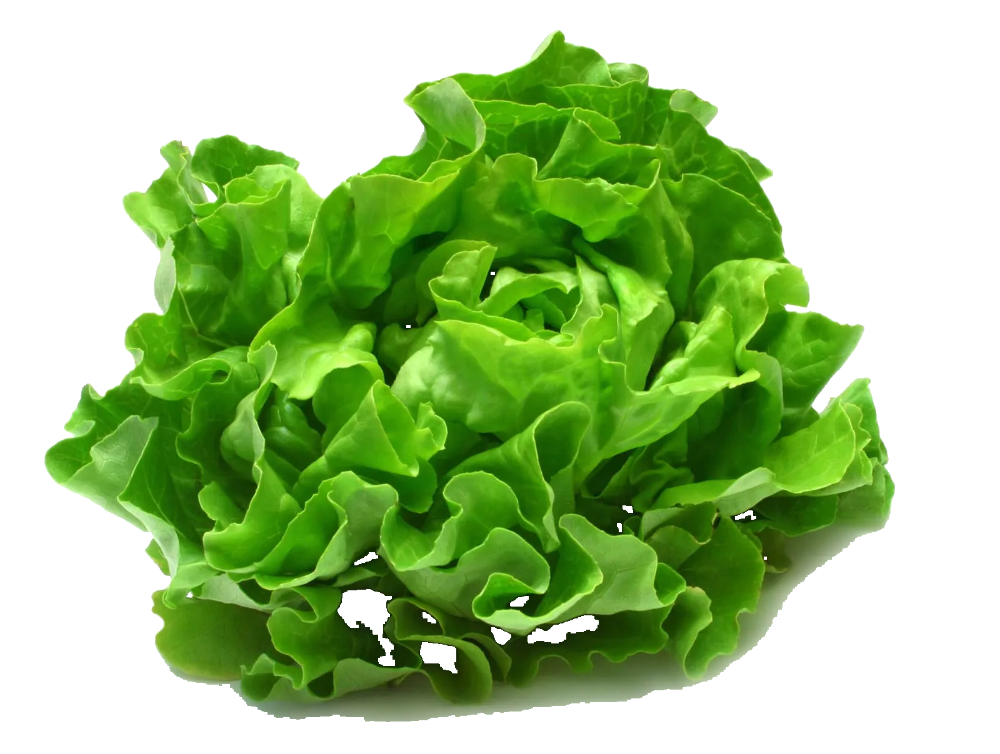
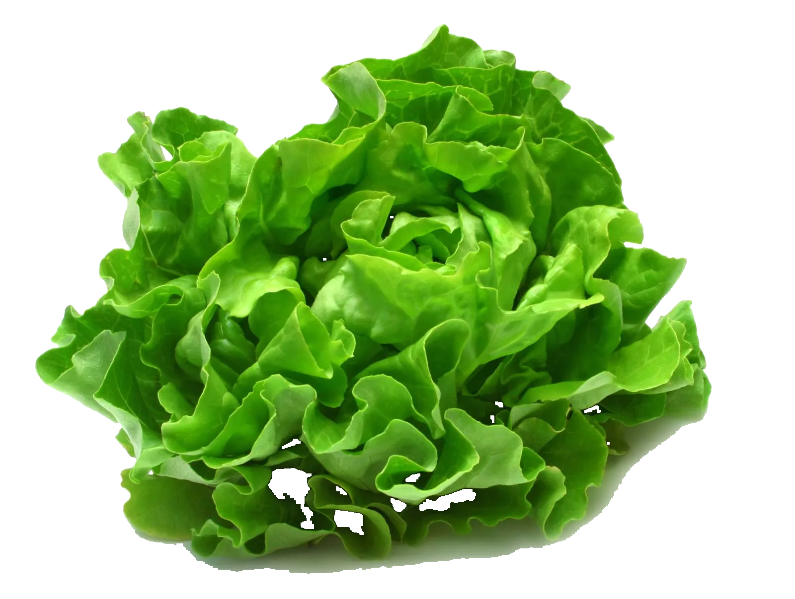

Zelený ráj
Co vlastně děláme?
Zelený ráj je místem, kde čerstvá a kvalitní zelenina potkává váš stůl. Naší filosofií je poskytovat zákazníkům nejen zdravou a chutnou zeleninu, ale také podporovat lokální farmáře a ekologické pěstování. V našem obchodě najdete širokou nabídku čerstvých, sezónních produktů, které jsou pěstovány s láskou a péčí, bez použití chemických hnojiv a pesticidů.
Věříme, že kvalitní potraviny jsou základem zdravého života. Proto vybíráme pouze ty nejlepší produkty od místních pěstitelů, kteří sdílí naši vášeň pro udržitelný a ekologický přístup. Naše zelenina je pečlivě kontrolována, aby splňovala nejvyšší standardy kvality, čerstvosti a chuti.
Nabízíme nejen běžné druhy zeleniny, jako jsou rajčata, papriky, saláty a brambory, ale také méně obvyklé sezónní speciality a bio produkty. Pokud hledáte inspiraci pro zdravé vaření, pravidelně sdílíme recepty a tipy, jak nejlépe využít naše čerstvé suroviny ve vaší kuchyni.
Zelený ráj je víc než jen obchod – je to komunita lidí, kteří sdílí lásku k přírodě a zdravému životnímu stylu. Připojte se k nám a podpořte udržitelné zemědělství, zdravé stravování a odpovědný přístup k životnímu prostředí.
Proč nakupovat u nás?
- Lokální a ekologické produkty – podporujeme české farmáře a dbáme na udržitelné pěstování.
- Čerstvost a kvalita – všechny naše produkty jsou pečlivě vybírány a kontrolovány.
- Široký sortiment – nabízíme nejen běžnou zeleninu, ale i méně známé druhy a bio potraviny.
- Inspirace pro zdravý životní styl – pravidelně sdílíme recepty, tipy a rady.
- Odpovědnost k přírodě – minimalizujeme odpad, používáme ekologické obaly a podporujeme fair trade.
Navštivte nás a objevte kouzlo čerstvé zeleniny!
Proč nakupovat u nás?
✅ Podporujeme lokální farmáře a jejich ekologické pěstování.
✅ Nabízíme sezónní ovoce a zeleninu v nejvyšší kvalitě.
✅ Žádné pesticidy ani chemická hnojiva – jen příroda!
Naše nabídka
- 🍅 Čerstvá rajčata a papriky
- 🥕 Křupavá mrkev a kořenová zelenina
- 🥬 Bio saláty a listová zelenina
- 🍏 Sezónní ovoce od místních pěstitelů
Naše prodejna